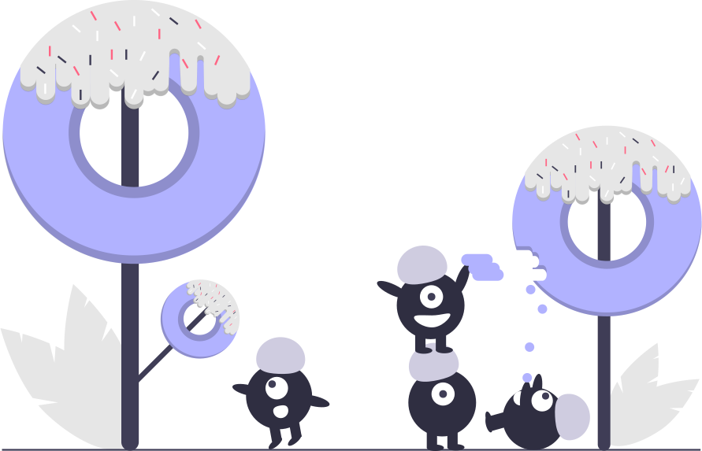

Faz muito tempo desde que encontramos aquele cantinho vazio no meio de um dos lugares mais movimentados da cidade, e mais tempo ainda desde que encontrei o meu lugarzinho em meio a tanto caos, não estou dizendo que devemos procurar uma ordem absoluta e parar de arrisracar, sei que no caos existem muitas coisas importantes esperando para serem tocadas, é nele que podemos ser aperfeiçoados
Mas nós criamos uma ordem , tenho muito orgulho em dizer que foi de nossa própria forma, com nossas próprias palavras, mesmo com defeitos e falhas, criamos uma base segura o suficiente pra continuar explorando o mundo descohecido sem se perder, e o mais importante, não estamos mais sozinhos.